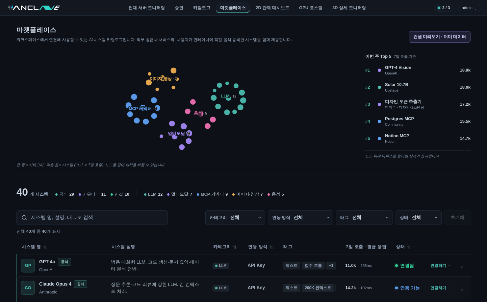
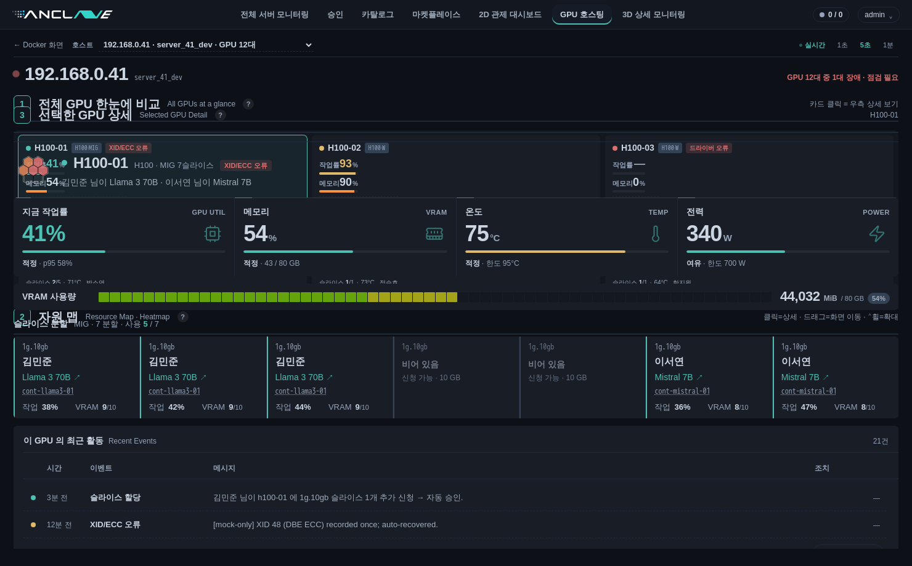

2026-05 시즌. 마켓플레이스 d3-force 관계성 그래프와 GPU 호스팅 단일 서버 대시보드 통합 정리.
/admin/marketplace 전면 재설계, /gpu-hosting 단일 서버 대시보드 추가.
MarketGraph.svelte, ResourceMap.svelte, GpuPanel.svelte, SliceCell.svelte, SectionTitle.svelte.
커스텀 pointer 핸들러 폐기 → d3-zoom/d3-drag/d3-force 표준 패턴.
5 카테고리: LLM 12 · 멀티모달 7 · MCP 9 · 이미지·영상 7 · 음성 5. 공식 29 / 커뮤니티 11.
워크스페이스에서 연결해 쓸 수 있는 AI 시스템 카탈로그. 공식 공급사와 사용자가 컨테이너에 직접 올린 커뮤니티 시스템을 같은 화면에 노출. 상단에 관계성 그래프, 하단에 고정 영역 테이블.

MarketGraph.svelte| 요소 | 구현 |
|---|---|
| force | forceSimulation + forceLink(invisible star) + forceManyBody(-55) + forceCenter + forceX/Y + forceCollide |
| 노드 | 시스템만 SVG 에 그림 (카테고리 anchor 제거). 색=카테고리, radius=log(7일 호출). |
| 카테고리 라벨 | 매 tick cluster centroid 계산해 자동 배치. cluster 가 어디 있든 라벨이 따라옴. |
| boundary clamp | tick 마다 노드 좌표를 [radius+22, width-radius-22] 로 clamp + velocity 0. viewBox 밖으로 새지 않음. |
| 휠 줌 | d3-zoom attached to |
| 배경 pan | d3-zoom 의 drag 가 자동 처리 (노드 위 클릭은 filter 로 제외 → d3-drag 에 양보). |
| 노드 drag | d3-drag + Svelte action use:attachDrag={n}. 표준 start/drag/end → n.fx/fy 고정·해제. |
| selectedId 동기화 | 외부 prop. 일치 노드만 흰 ring + 라벨 + 외곽 halo circle. |
onSelect(svc) 호출 → 테이블 행 펼침 + 자동 스크롤.focusSvc() 호출, 그래프 노드도 ring + 라벨 강조.fx/fy = null 로 다시 시뮬레이션이 자연스럽게 안정화..page { height: 100vh; display: flex; flex-direction: column; overflow: hidden; }
.shell { flex: 1; min-height: 0; display: flex; flex-direction: column; }
.table-card { flex: 1; overflow-y: auto; }
thead th { position: sticky; top: 0; background: var(--bg-base); }
페이지 전체 스크롤이 사라지고 그래프 + 상단 strip + 필터바는 viewport 안에 고정, 테이블만 그 아래에서 내부 스크롤. sticky thead 는 불투명 배경 + inset 0 -1px 0 var(--border) shadow 로 뒤 행이 비치지 않음.
| 필드 | 타입 | 설명 |
|---|---|---|
id / name / vendor | string | 식별자, 표시명, 제공자 (사람/팀 또는 회사) |
category | enum | llm | multimodal | mcp | media | voice |
connection | string | API Key | Endpoint URL | MCP Server |
status | enum | connected | available | beta |
source | enum | official | community — 컨테이너에 직접 올린 시스템 구분 |
summary / description / steps | string / string / string[] | 요약 · 상세 · 연결 단계 |
tags | string[] | 검색 + 필터 |
(파생) calls7d / latencyMs | number | id 해시 기반 deterministic, beta 항목은 latency 큼 |
한 GPU 서버의 상태를 호스트 카드 + 자원 맵 + GPU 상세 패널의 3-단 구조로 보여줌. Zenius / cuda_monitoring 의 honeycomb 시각화에서 영감.

| 영역 | 컴포넌트 | 역할 |
|---|---|---|
| ① 호스트 카드 | page-level | 서버 메타 (이름·CPU·메모리·전력) 와 GPU 합계. 드롭다운으로 호스트 전환. |
| ② 자원 맵 | ResourceMap.svelte | 호스트의 모든 GPU 를 honeycomb (7-hex flower / MIG weight × hex) 로 표현. 12-gon 외곽 frame 으로 slice 그룹 시각화. pan/zoom + 선택 가능. |
| ③ GPU 패널 | GpuPanel.svelte | 선택된 GPU 의 미니 hex flower mirror + 4 metric box + 60-cell VRAM bar + slice grid + 최근 활동 (스크롤 분리된 thead/tbody). |
94b5559)ca5a328)ce29b6f)153bde7)b71011a)027f2bf) · PR #36 merged → main| 패키지 | 버전 | 용도 |
|---|---|---|
d3-force | ^3.0.0 | force simulation (이미 있었음) |
d3-drag | ^3.0.0 | new 노드 drag |
d3-zoom | ^3.0.0 | new 휠 줌 + 배경 pan |
d3-selection | ^3.0.0 | new Svelte action 안에서 d3 핸들러 부착 |
@types/d3-* | — | TS 타입 |
frontend/
├─ src/lib/components/marketplace/MarketGraph.svelte (new)
├─ src/lib/components/host-board/
│ ├─ ResourceMap.svelte
│ ├─ GpuPanel.svelte
│ ├─ SliceCell.svelte
│ └─ SectionTitle.svelte
├─ src/lib/mock/gpu-hosting.ts (확장)
├─ src/lib/utils/hex-flower.ts (공용 hex 기하)
├─ src/routes/gpu-hosting/+page.svelte
└─ src/routes/admin/marketplace/+page.svelte (재설계)
focusSvc() 흐름 → 행 펼침 + 부드러운 자동 스크롤.